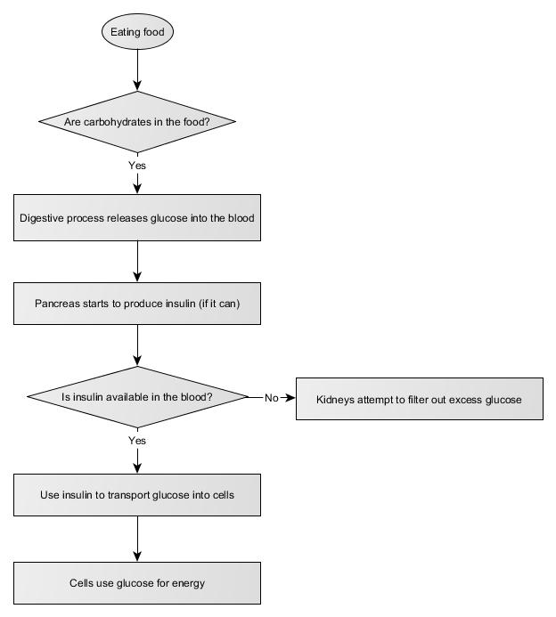
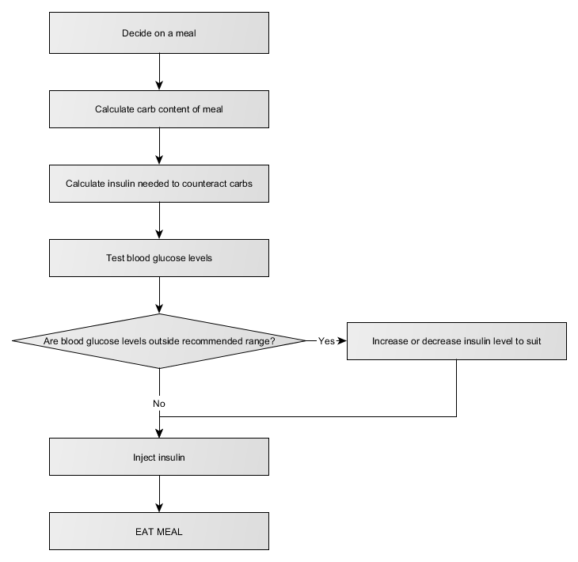
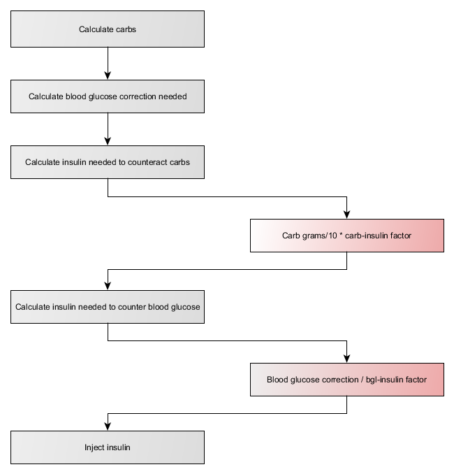

This information sheet is designed to give you the facts that you’ll need to understand and model Type 1 Diabetes in-game. It provides two levels of information: simple facts that can be used for basic modelling, and more in-depth detail for more true-to-life game models.
When we eat, our bodies take carbohydrates and turn them into glucose. This glucose goes into the blood for distribution around the body. The pancreas produces insulin; this transports glucose from the blood into cells, where it provides energy that the cells need to do their thing.
Type 1 diabetes is caused by a problem with the pancreas - it no longer produces enough insulin. Without insulin, glucose can't be transported from the blood to the cells - meaning that it stays in the blood until cleared by the kidneys. This is tough on many organs, but especially the kidneys.
Type 1 diabetics inject artificial insulin that can transport blood glucose into cells to be used for energy. However, the process gets more complicated: the pancreas usually regulates how much insulin is released into the bloodstream, keeping blood glucose levels between 4 and 6 mmol/L. We've already seen that too much blood glucose is bad: too little can cause big problems too. Hypoglycemia occurs when there's too little glucose in the blood - typically caused by an over-abundance of insulin. The body can't function without a base level of blood glucose, and loss of concentration, seizures, and coma can result quite quickly.
Insulin injections need to be carefully calculated to avoid both over-administration (leading to hypoglycemia) and under-administration (leading to organ damage).
There are two types of insulin that most Type 1 diabetics use. Long-acting insulin is injected once or twice a day in regular doses. It works very slowly in the background and overnight. Short-acting insulin is the type that we'll usually focus on: it's injected 3-6 times a day in varying amounts, as required. Insulin pumps are also available; these are a more automated option that deliver smaller doses of short-acting insulin more frequently.
Before a Type 1 diabetic can know how much insulin to inject, they need to know how much glucose is currently in their blood. To find out, they insert a test strip into a blood glucose meter, prick a finger to draw blood, then press the blood drop to the test strip. The meter measures and reports the person's current blood glucose level. This is often called the 'finger prick test'.
Insulin:blood glucose ratios (also known as 'correction factor') differ from person to person. This means that while one person might need two units of insulin to bring their blood glucose levels down 4 mmol/L, another person might need 3 units.
Continuous glucose meters are available for some people; these sensors are inserted under the skin and provide readings of the glucose levels in interstitial fluid around the body's cells. This is a bit different to measuring blood glucose levels, though, and several finger-prick tests per day are still recommended to keep the continuous glucose meter calibrated.
The other factor in how much insulin to inject is the number of grams of carbohydrates that the person is about to ingest. For example, a 150g apple will contain around 18g of carbs. 100g of roast potato contains around 27g of carbs. Each gram of insulin can counteract a certain number of grams of carbohydrates.
There are a number of factors that can complicate a relatively simple-sounding equation:
Once a person with Type 1 diabetes has tested their blood glucose levels, figured out how many grams of carbs are in the meal that they're about to eat, calculated the amount of insulin they need to take, and injected that amount of insulin... they can start eating.
Every Type 1 diabetic tends to keep lollies around. This isn't out of perversity; this is to ensure that if their blood glucose levels get too low (because they've miscalculated something, not finished a meal they've already taken insulin for, or their body is simply doing something odd today), they have a ready source of quick-release carbohydrates on hand to restore the balance.
A basic flowchart for calculating insulin dosage looks like this:

So:
insulin dose (in units) = (grams of carbs/10 * carb:insulin factor) + (bgl correction / bgl:insulin factor)
Keep in mind that the blood glucose correction required might be negative! If a person's blood glucose level is too low, then they'll need to take less insulin for the meal than they otherwise would.
For an MVP version, it's easiest to assign standard carb:insulin and bgl:insulin factors. Recommend carb:insulin = 1 and bgl:insulin = 2.
Printable PDF of this fact sheet
The following flowchart source files can be edited using yEd Graph Editor:
{kind=link}
{kind=link}
{kind=link}